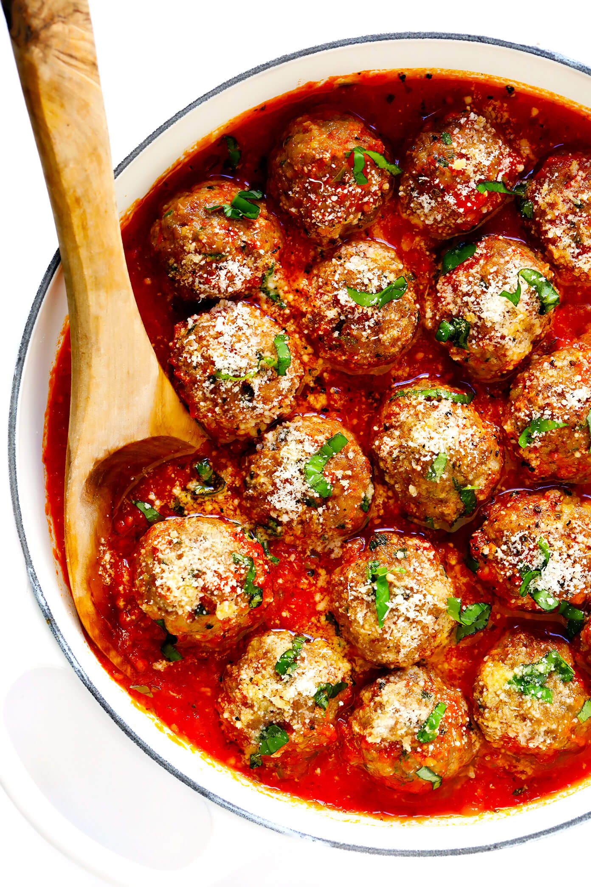

Swedish Meatballs

Description
If you’re wondering what’s so special about Swedish Meatballs, or what they taste like, close your eyes and imagine this: incredibly soft meatballs, made extra juicy by using a combination of both pork and beef and soaked bread instead of breadcrumbs, lightly spiced with just a touch of nutmeg and all spice that gives it the signature Swedish flavour, smothered in a creamy gravy that is absolutely to-die-for.
These are meatballs unlike any other – and regular readers know I have a very big soft spot for my favourite Italian Meatballs.
But I’d go as far to say that if you aren’t a regular maker of meatballs for whatever reason (pain to roll them, don’t like mixing meat with your hands etc etc), but you have the inclination to make ONE meatball recipe, make it these Swedish Meatballs.
But I’d go as far to say that if you aren’t a regular maker of meatballs for whatever reason (pain to roll them, don’t like mixing meat with your hands etc etc), but you have the inclination to make ONE meatball recipe, make it these Swedish Meatballs.
Ingredients
Beef AND pork – the beef gives it flavour, the pork gives it juiciness and tenderness;
Bread – the secret to extra soft meatballs! Far more effective than breadcrumbs;
Nutmeg and All Spice – the signature spicing, just a small, subtle amount. All Spice is a particular type of spice made from a plant called Pimenta dioica. It smells like cloves. It’s a common spice found in normal supermarkets, and costs no more than usual spices. Best substitute is Mixed Spice.
Beef stock/broth and cream – for the creamy gravy;
Flour – to thicken the gravy;
Egg – for binding the meatballs together.
Steps
- FIRST, chop up sandwich bread, the soak in grated onion. This is a secret tip for ultra soft, extra tasty meatballs. Grating onion = no need to pan fry chopped onion AND extracts onion juices which soaks the bread, which later puffs up inside the meatballs as they cook, creating ultra soft meatballs!
How to Roll Meatballs
- Use an ice cream scooper with a lever to scoop up the mixture. Standard size is 3 tablespoons – I use slightly less than the scoop (3 tablespoons is quite large);
- Scoop and dollop all the mixture;
- THEN roll them all;
- Voila! Even size meatballs, rolled relatively quickly!